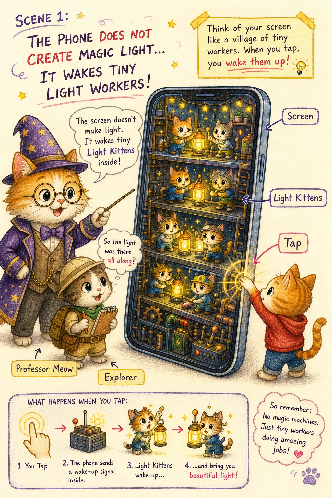
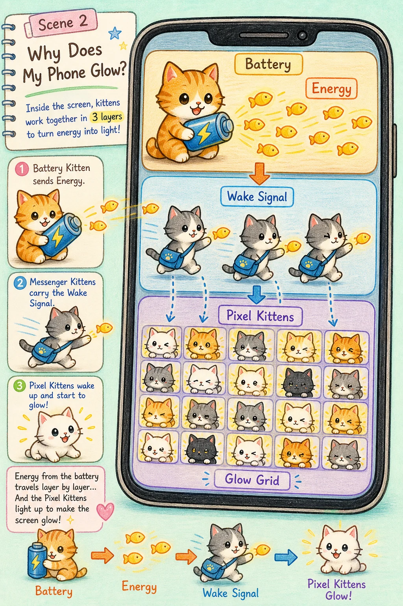
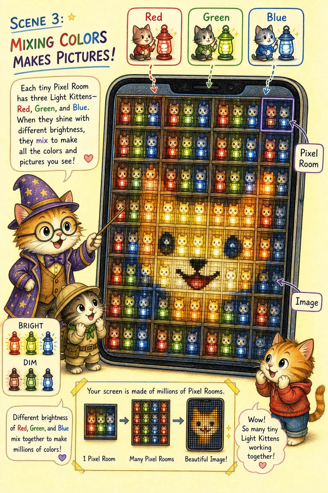
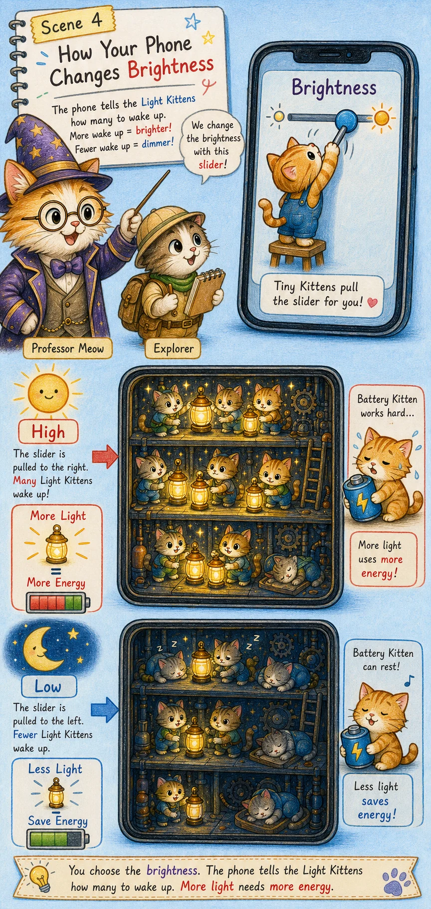
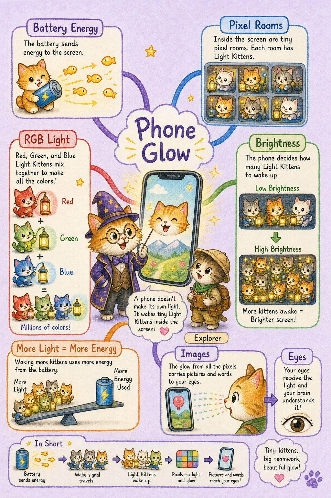

Professor Meow's notebook
小猫解释万物：手机为什么会发光
在我们的世界里，那其实是……一群住在屏幕小房间里的发光小猫，被电池小猫送来的能量轻轻唤醒。
喵呜，探险家，手机不是自己突然亮起来的。它像一座薄薄的“小猫灯塔城”：你一点屏幕，城门就开了，信号小猫跑去敲门，像素小猫们举起红、绿、蓝三种小灯，把文字、照片、动画和表情送到你的眼睛里。
故事板构建
- 喵爪点亮城门：手指一点，手机知道探险家来了。
- 电池送来小鱼干能量：电池把能量送进屏幕城。
- 像素小房间排队发光：红、绿、蓝小猫用不同亮度拼出图像。
- 亮度滑杆指挥合唱：亮一点就叫醒更多小猫，暗一点就让小猫们轻声发光。
画面一：喵爪唤醒屏幕城

当探险家点一下手机，屏幕城里的“敲门铃小猫”就收到了消息。它们不是在乱发光，而是在说：有人需要看见信息了，请发光小猫准备上岗。
画面二：电池把能量送进屏幕

手机里的电池，就像背着小鱼干背包的能量小猫。它把能量送给屏幕小猫，屏幕小猫才有力气举起小灯。于是我们就明白了：手机会发光，是因为能量被送到了屏幕里。
画面三：红绿蓝小灯拼出世界

每一个小小的像素房间里，都住着红灯小猫、绿灯小猫和蓝灯小猫。它们有的亮一点，有的暗一点，许多小房间排在一起，就拼出了图案。屏幕不是一整块光，而是许多小小光点一起合作。
画面四：亮度滑杆像指挥棒

当你把亮度调高，更多发光小猫会把灯举得更高，所以屏幕更亮，也会吃掉更多能量。把亮度调低，小猫们就轻轻发光，电池小猫也能休息久一点。亮度，就是指挥多少小猫、用多大力气发光的指挥棒。
总结思维图

所以，探险家今天铺上的这块知识砖块是：手机发光，是电池能量、屏幕像素、红绿蓝小灯和亮度控制一起合作的结果。你不是只看见一块亮玻璃，你看见的是一整座正在认真工作的光之小猫城。
这就是喵博士与探险家共同找到的答案：手机的光不是孤零零亮起的，它是千万只像素小猫把能量排成图案，温柔地把世界递到你眼前。